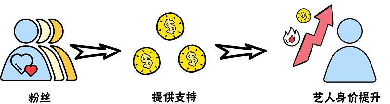
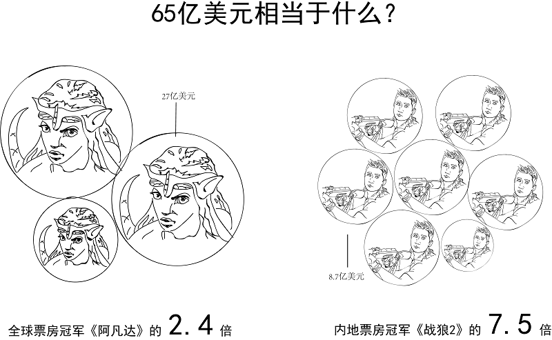

From Zero to One, From One to Infinity.
CNNIC（中国互联网络信息中心）发布的《中国互联网络发展状况统计报告》显示：2018年中国微博用户规模为3.37亿人。按照这个逻辑，一亿次的微博转发中，每三个微博用户就有一个人转发了这条微博。拥有几千万粉丝的艺人能够获得一亿次的微博转发，似乎并非不可置信的事情，毕竟粉丝量就意味着微博号召力。2018和2019年，拥有6000万微博粉丝的鹿晗和2000万微博粉丝的蔡徐坤在分别获得了泛娱乐大数据公司艾漫数据举办的“中国大数据文娱发布盛典”中“最具粉丝号召力男艺人”称号。
然而，艾漫数据同时指出，这样的粉丝数存在75%左右的“虚假数据”。
艾漫数据的工作人员同时指出，即使是真实粉丝，也不一定会每日在微博上与艺人进行转发互动。为了更好地衡量明星的热度，艾漫数据测算了剔除了水军以后，当日在微博上提及艺人的网民数量，并将这一指标称为“活跃粉丝数”。艾漫数据“中国娱乐指数”发布的每日活跃粉丝统计榜单显示，如果没有爆炸性舆情事件，即使是排名第一的明星，每日活跃粉丝量也基本不会超过15万。
若按照每日约有15万人在微博上与蔡徐坤发生互动来计算，即使每天这十五万人都将这条微博转发一次，也需要大约666天，也就是大约1.8年，才可达成1亿转发。
而根据央视报道，蔡徐坤的那条微博破亿，仅仅用了 11天。
爱他，就为他买数据？
单条微博短时期内转发破亿的背后，无一例外都存在“刷流量”的现象，不同的“爱豆”之间也存在相同的刷“流量”模式。
通过微博搜索可以发现，几乎每一位近年来较受欢迎的艺人都会拥有自己的“数据组”、“打投组”、“后援会”等。
“一天必须打够800条”。某影视剧女演员的粉丝小罗介绍道，粉丝在加入“数据组”后每天会有一定的任务量。为此，她会准备一批小号开始专门用来刷评论，评论内容很简单，“从1开始往上数数。”
而当艺人准备发布与代言或作品相关的信息时，其团队会将消息透露给“后援会”，以便及时进行安排。“后援会平时会在粉丝里物色有能力的、可信任的‘大粉’，吸纳进来、透一些公司的料。”
诸如此类的方法早已不再新奇，而“做数据”已经成为粉丝群体中的一种特定职能。艾漫数据与微博共同发布的《2018粉丝白皮书》显示，84.1%的粉丝曾经参加过“数据组”的活动，“做数据”是最常见的粉丝行为。
控评、反黑、宣发……这些“饭圈”行为几乎都与“数据”相关。“我们会提前准备好一些文案和图片，等到热搜出来、刷到相关的帖子，第一时间放进去，再号召其他粉丝一起创造热度。个别处理不了的情况会转交给工作室。”小巫钟爱的艺人在怀孕期间曾经招致大量关注与质疑，艺人生子当日，微博话题沸腾、系统瘫痪，在旅游途中的小巫则中断了游玩计划，坐在游乐园的角落里，举着手机开始控评。
然而，这种人工手动的“控评”、“刷量”操作只是制造流量的环节之一，这幕制造流量泡沫的大戏，还有另一个参与主体——水军。
小郭曾在一家业内知名的广告公司的明星组担任实习生，日常工作是根据客户的具体需求为客户的品牌推广活动推荐合适的明星。他向我们透露，无论是粉丝，还是明星背后的经纪公司，都会通过水军来刷高明星微博的转评赞数。而专门负责刷高微博转评赞数的“水军”，在业内往往被称为“微博数据维护”。
记者在微博上发现了许多“微博数据运营”的广告，与其中的几位进行沟通后，他们直接向记者发来了“买转买赞”的价目表。价目表显示，“纯刷量”的数据是最便宜的档次，每条转发0.015元，每个评论0.02元，而点赞则最贵，0.03元一个，除此之外，还有价格更贵的“真人转发、带图评论”等业务。
而粉丝们似乎不怎么光顾这样的店铺，“有些广告里说‘真人粉丝真实转发’，但有人试过、被骗了”，小罗介绍道。不同明星的粉丝之间经常互相推荐靠谱的刷量方式，在小罗经常使用的“星援”app中，可以通过批量购买小号进行自动转发评论。只要购买小号并支付一定金额将账号绑定到app中，仔复制艺人的微博链接，对转发的时间间隔、具体数量进行设置就可以完成操作。
但在用小号进行批量转发时，还会出现“死号”的状况，“你设置了转发15次，但第十次就卡住了，这种情况很常见，而且一下子上百个（出问题），钱就白花了。”
最多的一次，小罗买了一千个小号，加上绑定等各项费用，她单次打榜的花费超过了1000元。而无论是做数据，还是作为“大粉”助力明星的宣发推广，都不会得到任何实质上的回报，“除了工作室会提前透露一下行程，其余的纯粹是‘为爱发电’。”
多年前，鹿晗在2012年9月10日转发自曼彻斯特联队球迷俱乐部的微博曾因获得了1.3千万条评论，创造了最多评论的博文的吉尼斯世界纪录，这一纪录在15年被他的粉丝以 1.002亿条评论再次打破。如今，当他的粉丝重新回忆时，提到当时恰逢七夕，于是粉丝想用“1314万”的评论数据给他一个礼物。“当时他还归韩国公司，没有考虑商业价值，但知道这样做会有利于他的国民度和今后的发展。”
这些数据意味着多少金额的投入？我们根据最低价位的转赞评价目表生成了下图的计算器，上限数目为一亿。输入你期待看到的“数据”，看看需要花费多少吧。
From Zero to One, From One to Infinity.
谁在获益？
2月23日，央视新闻《‘惊人’数据的秘密》专题对已沸沸扬扬传了许久的“流量明星数据造假”进行报道，矛头直指流量明星锁场、刷榜、买粉丝。
流量不会凭空而生，天文数字的转发量表面上是粉丝行为所产生的，但每一次刷量转发背后，都隐藏着更深层次的原因。为这一整个流量造假产业链提供源动力的，恐怕不只是粉丝的“为爱发电”。
到底是什么原因，在推动着粉丝不断刷高“爱豆”的流量数据呢？
小罗喜欢的女演员在近年来凭借几部影视作品获得了较好的知名度， 前段时间，她的爱豆承接了一项护肤品代言，当晚的广告微博转发量未过万， “广告商的宣发就直接跟我们吐槽说——数据不好”。小罗意识到，即使是知名度达到要求，品牌方在寻找代言时也会参考艺人的微博转发情况。
“对用流量衡量艺人的方法，我们只是规则的适应者，平台制定的规则、那么多榜单， 还有什么‘热转前几有福利’搞这种活动，有时让我觉得挺讽刺”， 蔡徐坤的一位粉丝说，“我们无法改变规则，只能去适应”。
“反正是一种别人家都有，我们家也必须得有的感觉。”
正如小罗所说，当明星发布的广告微博数据不佳时，广告方会向粉丝施压。微博数据不佳将影响到爱豆后续与商家的合作机会， 在粉丝看来，在这个所谓“注意力经济”的时代，爱豆的利益和发展前景与社交平台的流量密不可分，其影响程度甚至超过了艺人自身的作品表现。
这一点在艾漫数据2018年艺人商业价值指数排行榜中有所体现。
数据显示，上榜艺人的热度和商业价值基本呈正比关系。 对于热度高于总体平均水平的艺人来说，这一趋势更为越明显。 专业指数对商业价值的影响则并不显著。同时，在专业指数相差无几的情况下，热度高的艺人普遍比热度低的艺人具备更高的商业价值。
第三方数据监测机构ADMater发布的《2018年代言人营销指数排行榜》中也指出， 相比于作品曝光，社交平台的讨论度更有利于助力品牌宣传。某广告公司的Digital组工作人员向我们道出了其中的逻辑：这符合品牌在社交平台推广时的需求。目前，品牌在微博上与明星进行推广合作，多会让明星在自己的微博上发布品牌广告，同时会建立“超级话题”汇总品牌推广相关信息。粉丝通过转发明星微博，评论超级话题，可能令品牌推广话题的阅读量动辄能达到上千万破亿，商家的宣传效果与明星粉丝的转发力度捆绑在了一起，偶像流量数据高了，自然有更多与商家合作的机会。
中国传媒大学经管学部文化产业管理系副主任韩润磊向我们介绍到，演艺明星有其市场属性，以自己的名气和明星效应来带动产品营销，本就是明星市场属性的正常体现。但以鹿晗、吴亦凡等小鲜肉艺人的横空出世为标志，目前明星商业价值的形成模式和之前相比有了非常大的不同。
韩老师介绍，曾经，明星想要形成巨大的号召力，进而获得商业合作的机会和其他演艺资源，需要有一个脍炙人口，红透市场的作品。那时传播渠道单一，没有像微博这样可以直接发布艺人相关信息、让粉丝与艺人互动的平台。艺人想要让大众了解自己的信息，只能借由电台、电视节目等方式。而只有先有了影视音乐作品，才有登上大众媒体进行推广宣传进而获得大量曝光的机会。商家想要与艺人进行合作，也只能从艺人的专辑销量、影视作品的数量等指标来判断艺人的号召力。这种模式可以看作是传统艺人经纪的模式。
而目前的流量艺人源于韩式“造星模式”：通过塑造人设，凭借选秀节目和社交网络得到曝光率和粉丝追捧，在短期内更加轻易地获取话题度和影响力，继而获得商业资源。这是粉丝经济的运营逻辑，这种产业逻辑下，演艺公司更看重通过对旗下艺人训练、包装，以及对综艺节目、歌曲的推广来培养忠诚的粉丝群体，粉丝的购买热情以及粉丝可以为偶像带来的传播力度则是流量艺人价值的核心体现。“流量越大”的艺人，也就是核心价值越高的艺人，能够吸引的注意力也就更多，因此，流量艺人即使没有过硬的代表作品也能够吸引广告代言资源。
对于广告主来说，资源投放时艺人超高的社交媒体流量可以为广告带来更好的传播数据以及更佳的购买转化率，而这正是广告主的普遍诉求。护肤品牌欧舒丹就曾在“鹿晗效应”下，收益一年内上涨20%。粉丝将广告转发量和“带货能力”作为衡量自家“爱豆”能力的标准，积极为自家“爱豆”代言的产品进行宣传、冲销量，无疑是广告商愿意看到的趋势。
当高额流量成为艺人获取更多商业代言与演艺资源的敲门砖，粉丝们就会为了让自家“爱豆”获得更好的资源而进行数据刷量行为，尽管市场在慢慢脱去水分，数据流量的作用已经逐渐消退，但是在“即使我们不刷，别人家也会刷”的普遍心态下，是否去刷流量已经成为了一个“囚徒困境”式的博弈，很难从粉丝行为上去解决。

“以流量换取资源是一种正常的市场行为，无可厚非。但流量造假却是一种不正当竞争的行为”，韩老师说。
目前，无效流量的问题正为广告圈带来巨额损失，流量的水分正越来越引发广告主的担忧。2017年，
美国在数字营销领域投入超过830亿美元，其中，无效流量带来的经济损失将超过65亿美元。

根据ADMaster的测算，2018上半年中国数字营销无效流量占比为28%。面对这样的现状，联合利华公司的总裁多次呼吁建立KOL流量监测机制， 并表示“联合利华将永久不与买粉、数据造假的社交媒体红人合作，并优先考虑与打击数据欺诈行为的平台合作。”
粉丝愿意给艺人买单本身是一件十分正常的事情，但是通过“数据造假”的方式进行恶意竞争， 则扰乱了市场秩序，不仅粉丝和经纪公司感觉疲惫，广告主也得不偿失，公众更是逐渐开始对数据产生警惕心理。 当数据全部变成“一亿+”的时候，数据就丧失了参考意义， 曾经依赖数据获得高关注度的艺人也开始面临“数据越高、口碑越低”的窘境，面临转型难题。
流量造假的驱动者是广告商，发起者是粉丝和经纪公司，曾经受益又自食苦果的是流量艺人， 而始终依靠提供“数据刷量”这些灰色服务获取巨额利益的， 是通过技术手段制造虚假数据的所谓“流量维护”者，他们才是这条产业链中“笑到最后”的人。
不过，他们笑不了多久了。
2018年8月，爱奇艺起诉杭州某公司使用个人QQ账号 、淘宝账户对外招揽视频刷量业务， 并且申请注册了域名供解析爱奇艺网站使用及用于刷量服务， 最终法院判决的赔偿金额50万元，成为我国第一起针对数据刷量起诉胜诉的案件。 今年5月，爱奇艺再次因“认为对方利用技术手段对“爱奇艺”网站视频进行刷量”，而以不正当竞争纠纷为由， 将触媒创想（北京）科技有限公司、北京数字简史科技有限公司诉至法院，“流量造假”这一灰色领域正在受到法律制裁。
随着央视在新闻中曝光小鲜肉微博数据造假的问题，流量造假这一现象在国内正受到愈来愈广泛的关注。 新浪微博将转发、评论计数显示上限设为100w、 爱奇艺取消前台播放量数据显示。过亿转发、几亿播放量恐怕将彻底成为历史，流量中的“水分”正逐渐被阳光晒干。
流量“脱水”后我们发现，蔡徐坤等人的有效声量仍然在所有艺人中位居第一。 去除造假的流量，粉丝经济的产业链依然完整，艺人的价值核心没有被动摇。
造假的流量，是粉丝自娱自乐， 广告商公司自导自演的喧哗与骚动，和虚假流量商暗中搅动的一滩浑水。真正决定爱豆价值的，本应是脱水后的“干货”。